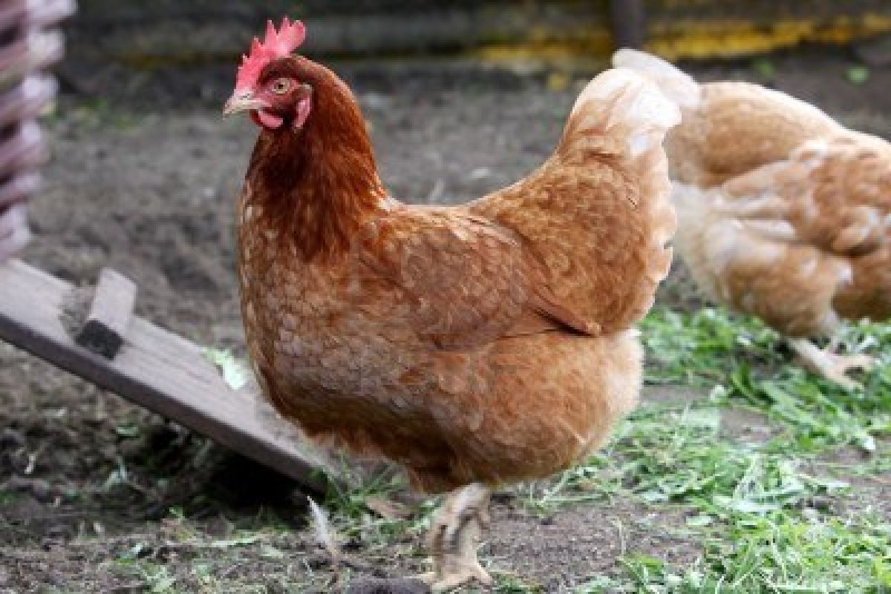

¿QUE ES UN ANIMAL DE GRANJA?
Los animales de granja son aquellos animales vertebrados que se crían en un establecimiento rural. Son animales domésticos ya que están acostumbrados a estar en contacto con las personas. En la mayoría de los casos, los criadores de estos animales han seleccionado las características deseadas a lo largo de las generaciones, por lo que distan mucho de sus parientes salvajes. Esta selección puede ocurrir a través de cruzas o reproducciones asistidas, o por medio de modificaciones genéticas. En ambos casos, se tiene como objetivo mejorar la raza o la especie desde un punto de vista económico o productivo.Un animal de la granja es un animal familiar criado con algun proposito o fin.
USOS
Los animales general mente se crian en granjas para ser usados por su lana, carnes o como animales de carga y transporteLa producción de los animales de granja puede ser intensiva o extensiva. La ganadería intensiva o industrial es un tipo de cría de animales domésticos que busca una alta producción, ya sea de carnes, leches o huevos, en un espacio reducido y de condiciones controladas (luz, temperatura, humedad). De esta manera, se maximizan las ganancias económicas
LOS CUIDADOS
En primer lugar debemos tener en cuenta que todos los animales de granja responden positivamente a los movimiento lentos y el trato delicado, por eso es fundamental que se eviten los ruidos demasiado fuertes y especialmente deberemos tener mucha paciencia, además de que deberemos movernos lentamente alrededor de los animales para advertirles que nos acercamos, y en lo posible debemos evitar acariciarlos o tocarlos por detrás ya que pueden sobresaltarse y ponerse muy nerviosos.El ambiente donde vive el animal debe estar limpio, con suficiente comida y agua . Finalmente en climas severos debe contar con lugares de alojo par resguado del climay evitar que los animales mueran.
¿LOS CONOCEMOS?
¿Qué animales Puedo encotrar en una granja?
| Vacas | Chanchos | Gallina | Oveja | Patos |
|---|---|---|---|---|
 |
 |  |